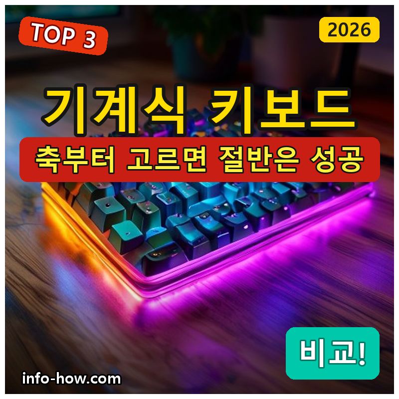
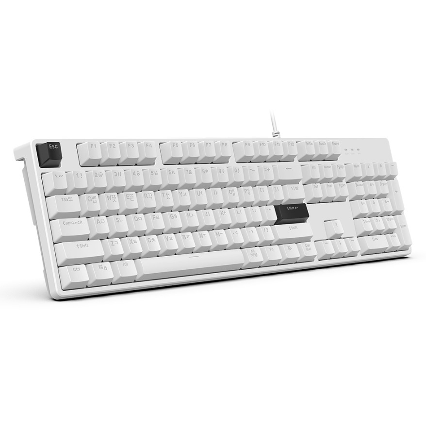
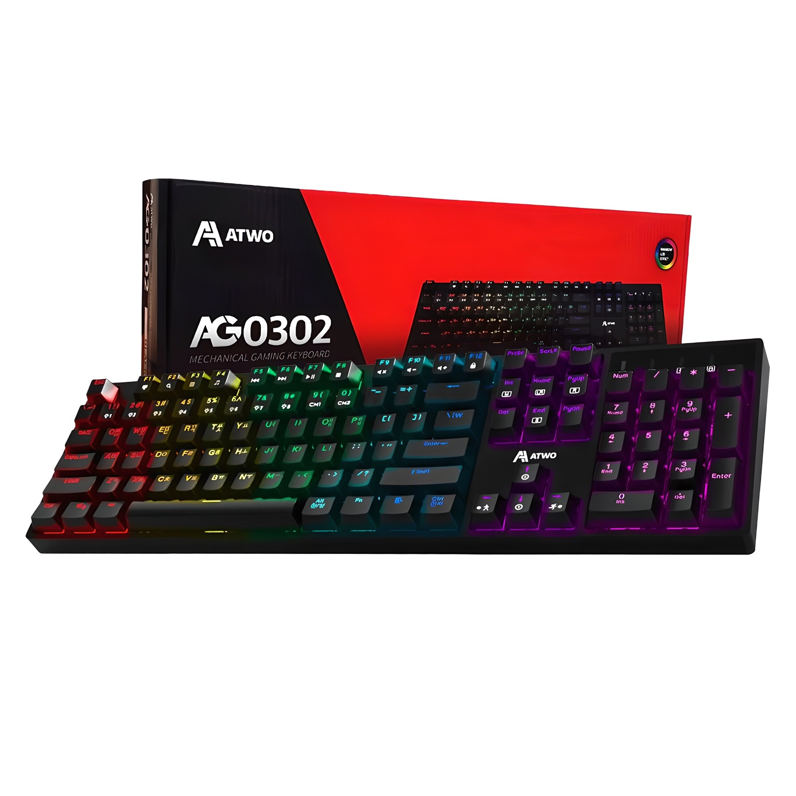
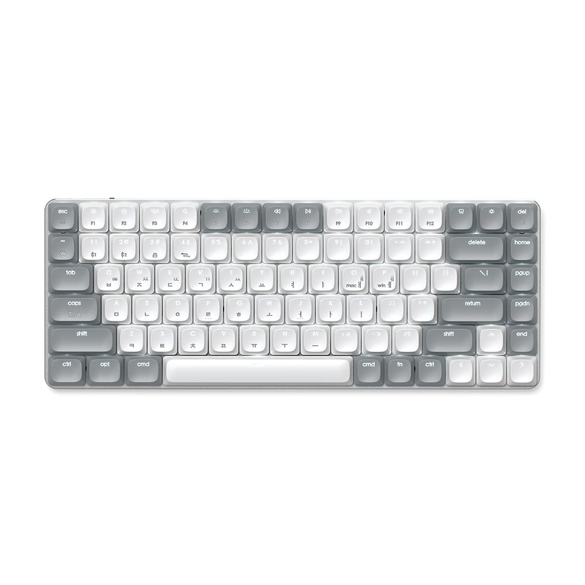

홈 › 제품리뷰 › 디지털/IT
기계식 키보드, 적축 게이밍 vs 무선 갈축
작성: 생활서식 모음 · 2026-07-11

파트너스 활동의 일환으로 일정액의 수수료를 지급받습니다
🛒 오늘의 쿠팡 특가 보러가기 →
기계식 키보드, 청축·적축·갈축부터 막히죠?
핵심은 딱 하나, "축(스위치) 선택" 3대 를
"일단 입문" "게임 반응속도" "사무실·무선"용도별 정답 까지 담았으니
📋 목차
기계식 키보드, 적축 게이밍 vs 무선 갈축 — 결론 먼저 스펙 비교표: 한눈에 보기 기계식 키보드 고를 때 봐야 할 4가지 게임이냐 타이핑이냐, 뭘 사야 할까? 자주 묻는 질문 (FAQ) 결론: 한 줄 요약
기계식 키보드, 적축 게이밍 vs 무선 갈축 — 결론 먼저
기계식 키보드는 "축(스위치)" 이 8할입니다.적축 (에이투 게이밍)이 무난하고, 타이핑·사무 위주면 딸깍이는 중간 감의 갈축 이 좋습니다. 일단 저렴하게 입문할 거면 2만원대 유선, 책상을 깔끔하게 쓰고 싶으면 무선 슬림입니다.
1 입문·가성비 (가성비 초이스)
가성비

2만원대 입문 유선
1. 한성컴퓨터 게이밍 기계식 키보드
2만원대 기계식 입문 한성 브랜드 가성비 기계식 타건감 경험용으로 딱
멤브레인에서 넘어와
추천 대상
기계식 키보드를 처음 저렴하게 경험할 분 멤브레인 키보드에서 업그레이드하려는 분 가성비로 게이밍·사무 겸용을 원하는 분 장점
2만원대로 기계식 타건감을 부담 없이 경험 한성 브랜드라 국내 A/S·접근성이 좋음 게이밍·사무 겸용으로 무난한 기본기 단점
무선·슬림·고급 스위치 같은 프리미엄 요소는 없음 입문·경험엔 딱이지만, 게임 반응속도를 극대화 하려면 2번 적축 게이밍, 무선·슬림 을 원하면 3번입니다. "기계식 처음"이면 이 가성비가 부담 없어요.
한줄 리뷰
"기계식이 궁금한데 비싼 건 부담"일 때 딱입니다. 멤브레인과의 타건감 차이를 2만원대로 체험하기 좋아요. 게임 성능·무선을 원하면 2·3번으로 넘어가면 됩니다.
주요 스펙
제품: 한성컴퓨터 게이밍 유선 기계식 키보드 연결: 유선 급: 입문·가성비 배송: 로켓배송 가격: 약 23,900원 (변동 가능) ※ 실제 스펙·가격과 차이가 있을 수 있습니다
2 게임·반응속도 (베스트 초이스)
베스트

적축·게이밍 풀배열
2. 에이투 게이밍 기계식 키보드 (적축)
적축 = 가볍고 빠른 입력 LED 백라이트 게이밍 감성 풀배열(넘버패드 포함)
가볍고 빠른 적축으로
추천 대상
게임을 주로 하는 분(빠른 연타) 가벼운 키압으로 오래 쳐도 손이 편한 걸 원하는 분 LED·풀배열 게이밍 구성을 원하는 분 장점
적축은 걸림 없이 가볍게 눌려 빠른 연타·게임 입력에 유리 LED 백라이트로 어두운 환경에서도 시인성·게이밍 감성 풀배열이라 넘버패드까지 있어 숫자 입력·업무 겸용 단점
적축은 눌리는 구분감이 약해 또렷한 타건감을 원하면 아쉬울 수 있음 타이핑의 또렷한 구분감 이 좋으면 갈축(3번)이 낫고, 조용한 사무실이면 소음도 고려해야 합니다. 2번은 게임 반응속도 가 목적일 때 가장 무난합니다.
한줄 리뷰
게임용으로 가장 무난한 선택이 이 적축 게이밍입니다. 가벼운 키압에 반응이 빨라 연타가 편하고 LED·풀배열로 구성도 좋아요. 다만 딸깍이는 타건감·무선을 원하면 3번 갈축 무선을 보세요.
주요 스펙
제품: 에이투 게이밍 LED 기계식 풀배열 키보드 (적축) 축: 적축(가볍고 빠름) 연결: 유선 · LED 백라이트 · 풀배열 배송: 로켓배송 가격: 약 59,900원 (변동 가능) ※ 실제 스펙·가격과 차이가 있을 수 있습니다
3 사무·타이핑·무선 (프리미엄)
프리미엄

무선·슬림 알루미늄 갈축
3. 사테치 SM1 무선 슬림 기계식 키보드
무선 멀티페어링(여러 기기) 슬림 로우프로파일 알루미늄 갈축 = 타이핑 구분감·적당한 소음
책상은 깔끔하게, 타건은 또렷하게
추천 대상
책상을 깔끔하게 쓰고 싶은 무선 선호자 타이핑 위주라 갈축의 구분감을 원하는 분 노트북·태블릿 여러 기기를 오가는 분 장점
무선 멀티페어링으로 PC·노트북·태블릿을 버튼 하나로 전환 슬림 로우프로파일 알루미늄이라 데스크가 깔끔하고 견고함 갈축이라 타이핑 구분감이 또렷하면서 소음은 청축보다 덜함 단점
11만원대로 가격이 높고, 게임 극한 반응속도는 유선 적축이 유리 게임 반응속도가 최우선이면 2번 유선 적축이 낫고, 일단 입문이면 1번입니다. 3번은 무선·슬림·타이핑 구분감 을 모두 원하는, 값을 낼 의향이 있는 분에게 어울립니다.
한줄 리뷰
"책상 깔끔하게, 여러 기기 무선, 타이핑 좋게"를 한 번에 잡은 제품입니다. 맥·노트북 데스크에 특히 잘 어울려요. 다만 게임 극한 성능·가성비면 2번·1번이 합리적입니다.
주요 스펙
제품: 사테치 SM1 슬림 무선 기계식 키보드 (갈축) 축: 갈축(구분감·중간 소음) 연결: 무선 멀티페어링 · 슬림 알루미늄 배송: 로켓배송 가격: 약 119,000원 (변동 가능) ※ 실제 스펙·가격과 차이가 있을 수 있습니다
스펙 비교표: 한눈에 보기
가격·풍량·무게 중 본인에게 중요한 기준부터 보세요. "최고" 표시는 3제품 중 객관적 1위 값입니다.
← 좌우로 스크롤 →
기계식 키보드 고를 때 봐야 할 4가지
기계식은 "축"만 제대로 골라도 절반은 성공입니다. 이 4가지로 후회를 막으세요.
1) 축(스위치) — 가장 중요
적축: 가볍고 빠름, 구분감 약함 → 게임·빠른 연타갈축: 중간 구분감·중간 소음 → 타이핑·사무 무난청축: 딸깍 소리·구분감 큼 → 타건감 최고지만 사무실엔 시끄러움2) 유선 vs 무선 — 용도와 지연
유선: 지연 없음·가성비 → 게임 극한 반응속도무선: 책상 깔끔·멀티페어링 → 사무·여러 기기무선이라도 최신 제품은 지연이 많이 줄어 일반 게임엔 무리 없음 3) 배열 — 풀배열 vs 텐키리스
풀배열: 넘버패드 포함 → 숫자 입력·업무텐키리스(TKL): 넘버패드 제거 → 책상 공간·마우스 공간 확보게임 위주면 마우스 공간을 위해 텐키리스를 선호하기도 함 4) 소음·키압 — 환경에 맞게
사무실·가족 공용 공간이면 청축 같은 시끄러운 축은 피할 것 오래 타이핑하면 너무 무거운 키압은 손이 피로함 저소음 적축 등 "저소음" 표기 축도 선택지 게임이냐 타이핑이냐, 뭘 사야 할까?
주 용도와 축만 정하면 답이 나옵니다.
일단 입문·경험: 1번 한성 유선 → 2만원대 가성비게임·반응속도: 2번 에이투 적축 → 가볍고 빠름사무·타이핑·무선: 3번 사테치 갈축 무선 → 깔끔·구분감자주 묻는 질문 (FAQ)
Q1. 적축·갈축·청축, 뭐가 다른가요? 눌리는 느낌(구분감)과 소음이 다릅니다. 적축은 걸림 없이 가볍게 쭉 눌려 빠른 게임 입력에 좋고 소음이 작습니다. 청축은 "딸깍" 소리와 구분감이 커서 타건감은 최고지만 사무실에선 시끄럽습니다. 갈축은 그 중간으로, 타이핑 구분감이 있으면서 청축보다 조용해 사무·타이핑에 무난합니다. 게임=적축, 조용한 타이핑=갈축이 일반적인 선택입니다.
Q2. 게임용으로는 무조건 적축인가요? 적축이 무난하지만 절대 규칙은 아닙니다. 적축은 가볍고 빠른 입력이 강점이라 연타가 잦은 게임에 유리해 많이 선택됩니다. 다만 또렷한 구분감을 선호하면 갈축을, 확실한 반발을 원하면 청축을 쓰는 게이머도 있습니다. 반응속도만 보면 유선 적축이 정석이고, 취향에 따라 축은 바꿀 수 있습니다.
Q3. 무선 기계식은 게임할 때 지연되지 않나요? 예전엔 그랬지만 요즘은 많이 개선됐습니다. 최신 무선 키보드는 지연이 크게 줄어 일반적인 게임에는 무리가 없습니다. 다만 프로 수준의 극한 반응속도가 필요하거나 지연을 완전히 배제하고 싶다면 유선이 여전히 확실합니다. 사무·멀티기기 편의가 중요하면 무선, 게임 극한 성능이 중요하면 유선으로 접근하세요.
Q4. 사무실에서 쓸 건데 시끄럽지 않은 축은? 갈축이나 저소음 적축을 권합니다. 청축은 딸깍 소리가 커서 사무실·가족 공용 공간에는 부담스럽습니다. 갈축은 구분감이 있으면서 청축보다 조용하고, "저소음" 표기가 있는 적축은 소음을 더 줄인 제품입니다. 조용함이 최우선이면 저소음 축을 명시한 제품을 고르는 게 안전합니다.
Q5. 풀배열이랑 텐키리스 중 뭘 사야 하나요? 숫자 입력 빈도와 책상 공간으로 정합니다. 넘버패드로 숫자를 자주 입력하는 사무·회계 용도면 풀배열이 편합니다. 반대로 게임을 주로 하면 마우스를 움직일 공간을 확보하려고 넘버패드가 없는 텐키리스(TKL)를 선호하는 경우가 많습니다. 책상이 좁거나 마우스 공간이 중요하면 텐키리스, 숫자 입력이 잦으면 풀배열을 고르세요.
결론: 한 줄 요약
1) 한성 게이밍 유선 — 약 23,900원 / 입문·경험. 2만원대로 기계식 타건감 시작.2) 에이투 게이밍 적축 — 약 59,900원 / 게임·반응속도. 가볍고 빠른 적축+LED 풀배열.3) 사테치 SM1 무선 갈축 — 약 119,000원 / 사무·무선. 멀티페어링 슬림, 깔끔+타이핑 구분감.이 포스팅은 쿠팡 파트너스 활동의 일환으로, 이에 따른 일정액의 수수료를 제공받습니다.